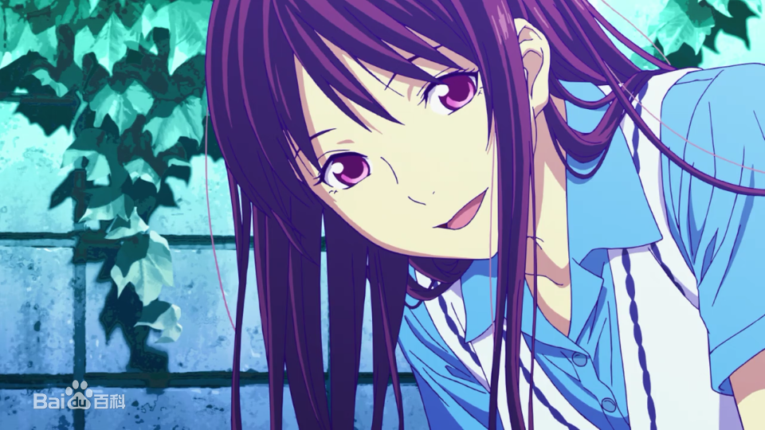
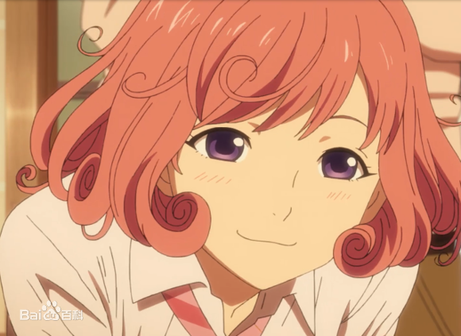
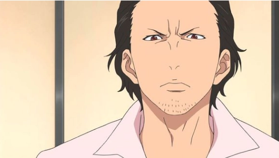
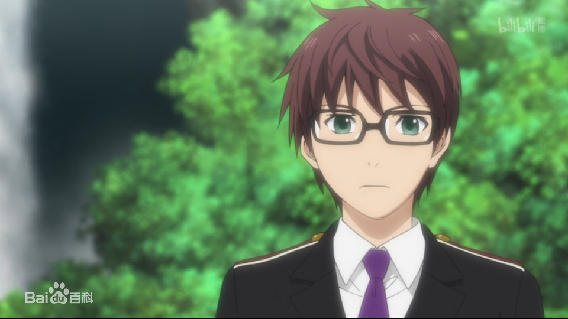

夜斗，日本漫画《野良神》及其衍生作品中的男主角。性格古怪且身具诸多谜团，因居无定所，无所事事，饱餐不定，导致手下的神器纷纷跳槽。是个没有神社供奉自己的、缺少香火的落魄神明。 一直怀抱“希望受万民景仰”这个伟大理想的他，只好只身在此岸与彼岸间徘徊，为五日元的香油钱（五斗米）折腰，接受上至斩妖除魔，下至修东修西(甚至杀人)的各类委托。
黑发蓝瞳，有些轻浮,长期穿着万年不变的运动服外套(衣服上的小皇冠图案代表了夜斗神的标志),脖子上也挂着白色的围巾并带着一个装满五元零钱的一升大酒瓶（为建神社而积蓄）,手汗严重且有诸多恶习而被手下神器嫌弃,前任神器伴音曾总结评价他是一个“居无定所无职自称为神的运动外套男”,一歧日和评价为尼特族(废材)。
热情，责任心很重（指工作方面），是能在关键时刻靠得住的家伙，但做事只有三分钟热度，爱妄想，喜欢听恭敬和被他人奉承的话，没有钱缘，但是个“钱控”。平常看似比较随便，天真活泼的样子，其实有着不为人知的另一面。遇到重要事件会表现出严肃沉稳（真实性格）或是阴暗冷酷的表情。
爱好是喝酒、吃零食，兴趣是收集幸运道具（常常被人骗）或赌博，没钱的时候就对手下神器的兼职费下手或从损友小福那里拿钱，被一歧日和评价为尼特族（废材）。 [5] 在数百年中为了解决人世间的各种烦恼而学会了许多琐碎的特长： 绘画技能，最用心之作就是为唤起日和记忆而花光五元积蓄的三人漫物语本。作为漫画家的笔名十夜，曾出版过毗沙门天的同人（r18）漫画，都被兆麻买去。 也做过雕刻、歌星、摆地摊、牛郎等一系列的职业。
从小就十分希望是拥有一间属于自己的神社（几乎成了夜斗的夙愿），在一歧日和、其神器雪音以及前代惠比寿的影响下下决心成为福神，并一直努力着。
被夜斗捡来“神器”的男孩。赐名雪，神器形态为一把无鞘的太刀，成为祝器后变成一把太刀一把胁差，因年龄正处于少年敏感的青春期，所以性格前期任性高傲，叛逆自大，不好管教。夜斗为此有很长的一段时间头疼。在之后经历了自身事件，被夜斗与日和拯救后，性格变得忠诚，能为其奉献一切，是当过夜斗所有神器中第一任愿意为夜斗改变的人，第一任成为祝器的人，为了能好好承担起身为夜斗的道标，努力向兆麻学习术法。
夜斗曾经的第一任神器，已被夜斗除名。头戴天冠，身穿白和服的谜样少女，拥有许多主人与名字的野良之一。全身刻满了文字，野良之中的强者，比起普通的野良是更被众神所忌讳的“低贱”存在，人类形态下可以通过净水（湖泊、神社的水池等）进行瞬间移动，在不同主人的神器形态下可以具有不同的特殊能力。
夜斗曾经的第二任神器。早期为天神道真公的神器，却因天神的一度发狂而被抹去名字重新变回无名亡灵，无家可归之际被妖所伤后遇到夜卜向他求助而再度获得赐名樱变回神器
夜斗曾经的神器之一，以“生理上无法接受”为理由只工作三个月便跳槽成为天神道真的神器，可在夜斗进行祓禊仪式时，又因过去的主仆关系，帮助夜斗进行了雪音的祓楔仪式，其实认为夜斗并不是个恶神，只是不擅经营和讨厌夜斗冷漠一面而厌恶当其神器（形态是无护手的短刃）。
| 角色名称 | 角色图片 |
|---|---|
| 一歧日和 表面来说是信徒和神明的关系，但实际上有着很深的缘分牵绊。日和曾经多次救过夜斗，在夜斗心中占有非常重要的位置。在漫画79话中，夜斗表明自己喜欢日和。 |
 |
| 惠比寿小福 绝对的损友，在一起一定会出乱子。经常因夜斗的可怜（演艺）而给钱。目前让夜斗与雪音寄居在她家里生活。而小福是在夜斗为祸津神时期认识的，性格看似迷糊总不靠谱的样子，但在该强硬的地方，心里丝毫没有产生胆怯，反之态度会变的更加强横，甚至开始先发制人，特别是重要友人要被伤害时。 |
 |
| 大黑 小福的神器，对夜斗总是刀子嘴豆腐心，会因为夜斗对小福的一些动作和骗钱而踢飞他，其实关系也十分好。在雪音进行禊时主动担当第一个神器，并在半夜四处去别的神社请求给予一位神器,每次都是标准的九十度弯腰和恳求的语气。 |
 |
| 兆麻 当年因“麻”字族内部的互相猜忌纷纷妖化致使毘娜堕落时，因此恳求祸津神夜斗灭掉“麻”字族救下毘娜，不想也导致了毘娜对夜斗数百年来的私怨，不敢说出当年的真相但一直视夜斗为恩人，之后一边配合毘娜与夜斗战斗，一边也暗中帮助夜斗度过了些许难关。 |
 |